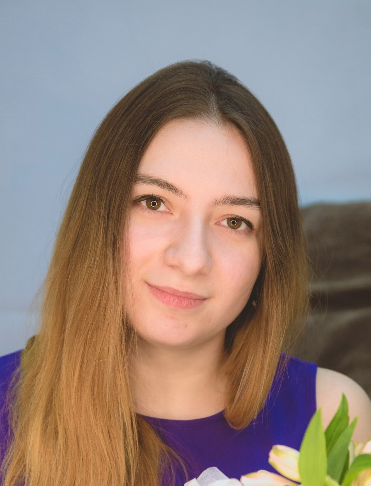

|  |
Меня зовут Подольцева ОльгаОбо мне:
|
Русский
English (Upper Intermediate, but have troubles with speaking)
Español (Básico)
C (давно уже не использовала, надо вспоминать)
С++ (включая C++11, но исключая C++14)
Java
C# (уровня скриптов для Unity3d)
Python (начала изучать)
Небольшие программки на Unity3d с целью пощупать движок а-ля шарик управляется пальцем, может врезаться в объекты
Учебный проект Система удаленной консультации с помощью AR (описание). Моя часть - разработка архитектуры приложения, написание алгоритма распознавания маркера для очков. Использовали библиотеку OpenCV (сейчас то, что есть, написано и на C++, и на Java Android, хотим все перенести в native). Дополнительный плюс к проекту: использовали Agile-технологии: Jira, Confluence, Stash.
сентябрь 2015 декабрь 2015
Техник (частичная занятость)
Должностные обязанности:
Центр развития ИТ-образования МФТИ (ГУ)
3-13 января 2016, 24 февраля - 5 марта 2016, 31 июля - 13 августа 2016
Вожатый на олимпиадных школах
Должностные обязанности:
Обожаю компьютерные игры. В условиях общаги все никак не могу завести себе консоль
Хочу заняться геймдевом, скорее мобильным, очень нравится движок unity3d
Люблю рисовать. Но не умею. Есть даже графический планшет. Мой максимум - довольно точно воспроизводить чужие творения
Люблю сказки и древнегреческие мифы. И все, что с ними связано: кино, мультфильмы, комиксы, игры